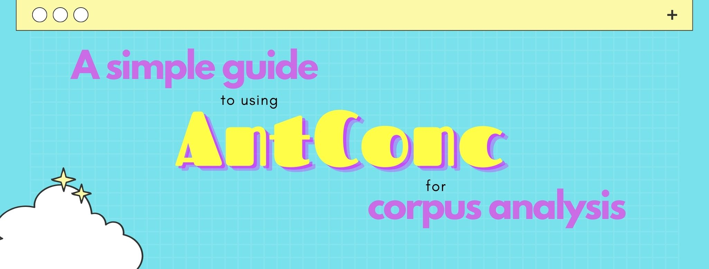
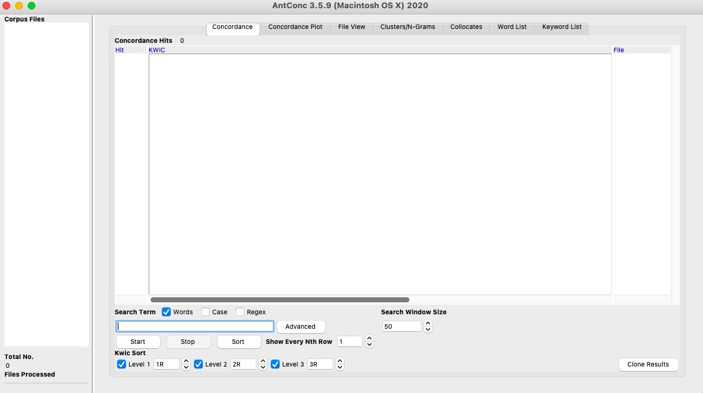
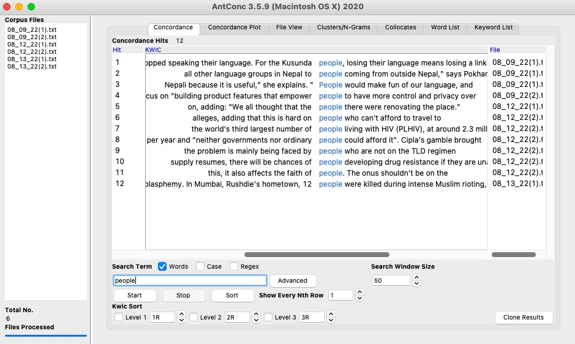
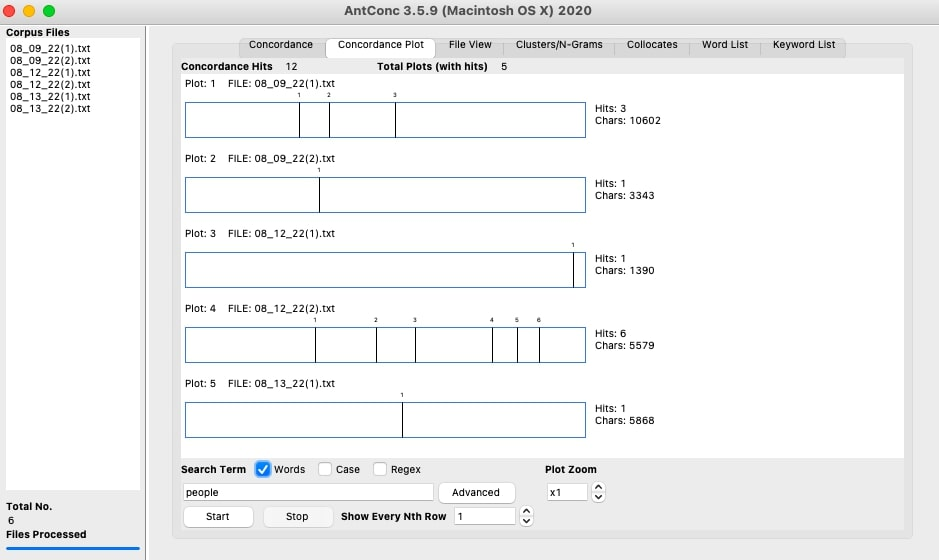
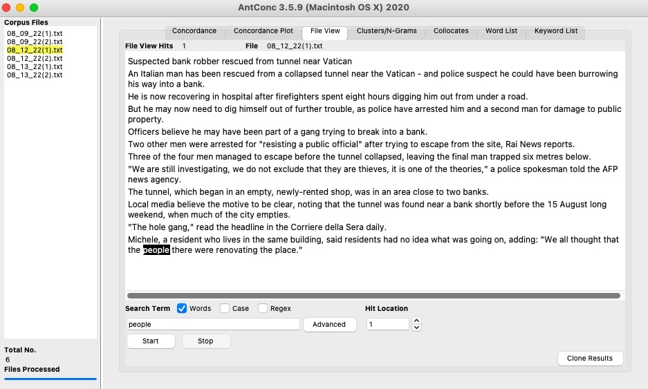
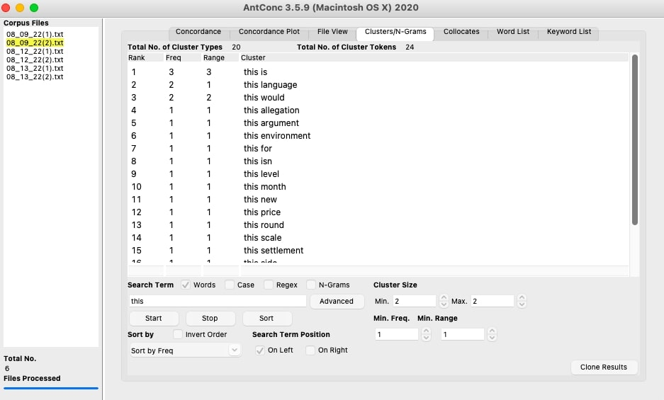
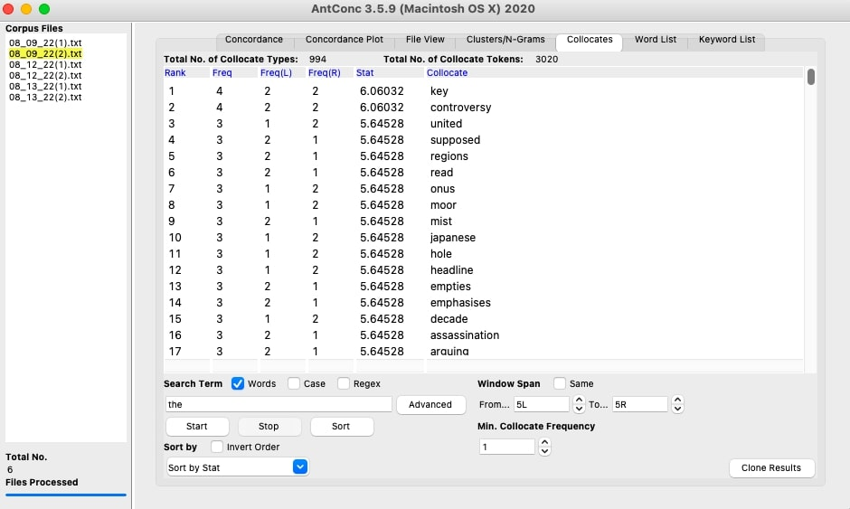
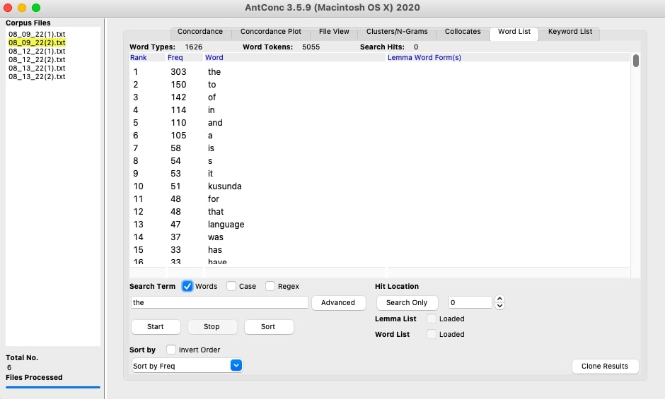

If you're interested in corpus linguistics, you probably know that some of the things this field involves includes searching for patterns in a group of texts (e.g., find frequent words or collocations). This can be easily done using a programming language like Python or R. But, what if you don't have much experience with programming languages? Well, this is where a tool like AntConc becomes useful!
AntConc is a free corpus analysis software that can easily help you identify patterns in a collection of texts. To use it, you don't need to know any programming language. All you need is a corpus. In this blog post, I explain how to use AntConc for the first time.
Before using AntConc, you must download and install the software from its official website. It works on Windows, MacOS, and Linux. The only thing to keep in mind it that AntConc needs to run on a computer (tablets or phones are not supported). Once you download it, simply open it to install it.
After downloading and installing AntConc, you should see something like this when you open it:

On the left-hand side, you'll see a white column named "Corpus Files". That's where your text files will be listed once you import them. On the right-hand side, you'll see a white rectangle with seven different tabs on top. Each of these tabs performs a different kind of analysis, which I explain below. The outputs from your analyses can be saved and exported as plain text files (File > Save output).
Basically, with AntConc you can perform seven types of analyses, each corresponding to a different tab. But first, you need to import your texts!
AntConc can only work with plain text files (.txt files), so make sure all your files are already in that format. I suggest you create a folder where you include all the files you want to import. Once you have it, go to File > Open Directory > select the folder. All your text files will now be listed on the left-hand column.
For this blog post, I will be using a small corpus comprised of news articles from the BBC.
The "concordance" tab (also known as the KWIC, for keyword in context) allows you to find specific words in your corpus. For example, if you type a word like "people" in the search bar at the bottom and then click on the "Start" button, you'll see a list of sentences that contain that word. The word you're interested in is highlighted in blue:

The "concordance plot" tab also works with a keyword you need to enter. The output is a set of plots which show you were exactly in your texts that keyword appears:

In this example, each vertical black line represents an instance of the word "people".
The "file view" tab allows you to see the word in the text. This tab will basically show you the full text with all the instances of the word highlighted in black. To do this, you need to select a single file from the "Corpus files" column first, as the tab can only show you one text at a time.

The "clusters/n-grams" tab is one of the most used ones. Here, you can search for groups of words. The default is set to groups of 2 words, but you can change that number at the bottom ("cluster size"). For example, if you want to see what words are usually followed by a demonstrative like "this", you would type "this" in the search bar and click on "Start". The output will list all two-word combinations that start with "this":

The "collocates" tab gives you a list of words which often appear accompanied by whatever keyword you enter. The first time you use this function, AntConc will tell you it needs to create a word list. If you see this message, just click the "Ok" button.
Using the sample corpus from the BBC, I searched for collocates with the determiner "the". The output shows that "key" is the most common word that accompanies "the" in the corpus:

The "word list" tab simply shows you a full list of all words in your corpus. It is sorted by frequency, meaning that the most frequent words will appear at the top. Unsurprisingly, stopwords tend to always be the most frequent words in a corpus, as exemplified below:

You can configure AntConc to omit stopwords in this type of analysis. To do so, follow the instructions from step 2 of this guide.
The last tab, "keyword list" helps you compare two corpora. For example, you might want to analyze whether the words used in news articles from the BBC are similar to the words used in a different media outlet. This type of analysis requires you to have a second corpus with which to compare yours. AntConc will then perform some statistics (chi-square and log-likelihood) which will hopefully help you answer your research questions.
To see a step-by-step guide on how to compare two corpora, visit this website.